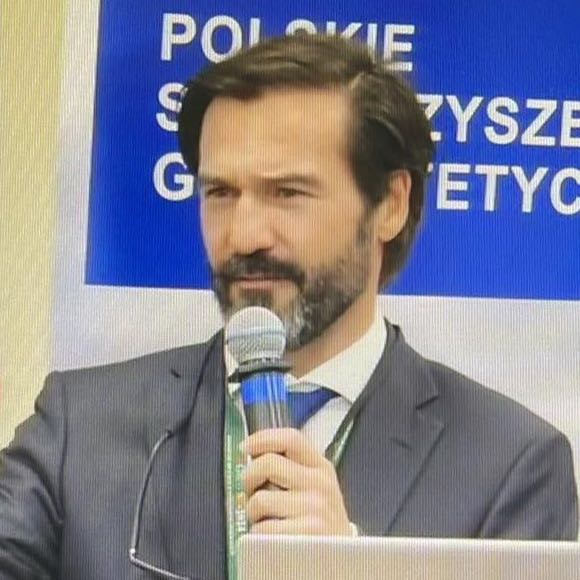

Advancing energy efficiency, AI-driven building performance, and the conservation, restoration and rehabilitation of the built environment — from Lisbon to the world.
Recent Activities Publications
Co-founder of the Building Science, Technology and Sustainability Laboratory (BSTS Lab). Researcher at CIAUD. Conference Chair, ICBSTS & ICAMC series.
nZEB & Positive Energy Buildings, BIST/BIPV integration, multizone dynamic simulation, digital twins, and AI-based predictive maintenance for existing building stock.
Bachelor's to Doctoral levels at FA-ULisboa and SGGW Warsaw — Environmental Comfort, Energy Efficiency, and Artificial Intelligence applied to cities, buildings and research.
Program chair of the international BSTS conference series (Lisbon · Singapore · Nagoya), lead guest editor, and partner in European-funded projects such as Horizon 2020 SHARP and Erasmus+ CLASS.
Nuno Dinis Cortiços graduated as an architect in 1999, his final project distinguished by the Portuguese Architects Association as "Best Student Work of the Year." After practicing at renowned firms — notably Aires Mateus Associates — he founded his own office, leading architectural design services on projects up to 75,000 m².
Joining academia in 2007, he completed a Ph.D. in Construction Technologies (2014) on building performance assessment and defect analysis. His research evolved toward bioclimatic analysis, environmental performance and sustainability, with deep specialization in conservation, restoration and rehabilitation of existing buildings.
In 2020 he co-founded the Building Science, Technology and Sustainability Laboratory (BSTS Lab), consolidating interdisciplinary research in bioclimatic architecture, energy retrofitting and AI applications in building performance, and coordinating annual international conferences. Today his work focuses on transforming existing buildings into Nearly Zero Energy (nZEB) and Positive Energy Buildings (PEB), leveraging modular construction, integrated photovoltaics and dynamic simulation.
Publications
CitationsGoogle Scholar total →
H-IndexResearchGate profile →
Events Organized
Communications
Invited Keynote Speaker
Journals Reviewed For
Funded Projects
Highlights from 2024–2026: conference leadership, funded research, heritage advocacy and invited talks across Portugal, Europe and Asia.
Invited speaker at the Heritage Days (Jornadas do Património) organized by the Câmara Municipal de Palmela, Portugal, addressing conservation, restoration and rehabilitation strategies for the municipality's built heritage.
Validating advanced micro-sphere, high-reflectivity coating systems for the passive energy retrofit of Portugal's pre-1990 housing stock and historic buildings, where conventional insulation thickness must be minimized. Gap analysis, emissivity and solar-reflectivity measurement, hygrothermal simulation and climate-aging mock-up validation — with Carlos C. Duarte (PI) and the Technological Center for Ceramics and Glass (CTCV). Approved March 2026.
Leading the FA.ULisboa team as Principal Researcher in this 36-month Erasmus+ cooperation project (€250,000), coordinated by Yes We Camp (France), in partnership with Tübingen University (Germany), Ancoats (France) and Coop'Eskemm (France) — collective learning around sustainable spaces across Europe.
Chairing the 7th International Conference on Building Science, Technology and Sustainability and the 12th International Conference on Architecture, Materials and Construction, hosted at Faculdade de Arquitetura, Universidade de Lisboa, September 2–4, 2026.
Leading BSTS Lab research on X-TEND, a light, modular, prefabricated prototype that extends living space on existing residential façades — combining generative structural optimization, bioclimatic design and green building strategies for post-pandemic urban living.
Compendium for Architectural Practice (with Carlos C. Duarte, MDPI) — bioclimatic design, passive and active systems, renewable integration and adaptive comfort strategies, bridging theory with climate-responsive practice.
Conference Chairman, keynote speaker and program chair of the 6th ICBSTS and 11th ICAMC at Meijo University, Nagoya, Japan (September 3–5, 2025), presenting "AI tools on architectural design and rehabilitation" — after NTU Singapore (2023). Also presented at CIRMARE 2025, Porto, in November.
Comprehensive analysis of AI software tools and their global adoption (Springer LNCE, 2025), AI impact on buildings' energy efficiency (IEEE ICCSM, Paris), and doctoral teaching on AI applied to cities, buildings and scientific research.
Invited to the University of Nottingham's Department of Engineering to present research on AI integration in building design for energy-efficient conservation, and engaged with the Saraiva + Associados Academy bridging architectural innovation and digital technologies.
43 publications in high-impact journals — Elsevier, Springer Nature, MDPI, IEEE. Ordered by citation impact.
Full record also available on ORCID.
Keynote speaker, chairman and scientific committee member in 20+ international conferences across Europe, Asia and the Americas — 44 events organized.
Conference Chair — returning to Faculdade de Arquitetura, Universidade de Lisboa, jointly with the 12th ICAMC.
Conference Chairman, keynote speaker and program chair of the 6th ICBSTS and 11th ICAMC — presenting "AI tools on architectural design and rehabilitation."
Presented research on psychrometric models for climate-responsive architecture.
Host and program chair at FA-ULisboa; conference held in the Queen Sonja Room of Norway.
Presented two studies: circular economy in Poland's construction sector, and energy production potential of public spaces.
First abroad edition of the BSTS conference series, hosted at NTU Singapore.
Serving as opponent, examiner and committee chair in Ph.D. and Master's thesis presentations at Faculdade de Arquitetura, Universidade de Lisboa.
"Reformulation of the Moimenta Thermal Baths" ("Entre o Tempo e a Terra | Reformulação das Termas da Moimenta") — Integrated Master's in Architecture. Supervisor and jury vowel. Jury: Filipe Alexandre Duarte González Migães de Campos (President), Nuno Dinis Costa Areias Cortiços, José Manuel dos Santos Afonso (Vowels).
"Artificial Intelligence as the Architect's Tool" — Integrated Master's in Architecture. Co-supervised with Nuno Filipe Santos de Castro Montenegro. Jury: Francisco José de Almeida dos Santos e Agostinho (President), Nuno Filipe Santos de Castro Montenegro, José Nuno Dinis Cabral Beirão (Vowels).
For aging residential buildings in data-scarce contexts (2025–2028). Awaiting FCT scholarship approval, ref. 2026.04756.BD. Guidance team: Carlos C. Duarte, Nuno D. Cortiços.
Doctoral research on AI methods for modular construction systems, started 2024.
Under climatic and occupant-behavior uncertainty. Thesis project seminar approved unanimously (12/20) on June 19, 2026 — jury: Pedro Lima Gaspar (President), Leen Hiasat (external examiner).
Model for energy and lighting efficiency in Portugal's HORECA sector, validated in hotel, restaurant and café settings. Thesis project seminar approved unanimously (18/20) on July 7, 2026 — jury: Pedro Lima Gaspar (President), Luís Rosmaninho (external examiner). Primary supervisor: Carlos Chambel Duarte.
Typological analysis in the Baixo Alentejo context, started 2024.
Rehabilitation of the Vagasplash motorhome park in Vagueira, with mobile micro-housing units, started 2024.
Defense dates are set by the faculty closer to submission and are not yet publicly scheduled — this list reflects supervision currently in progress, sourced directly from the CV.
Buildings and walkways of the Vale de Santo António. Defended Q4 2025; final corrected document approved and submitted January 2026. Co-supervised with Nuno Mateus.
"Contribution to Local Sustainability" ("Habitação Modular Pré-Fabricada em Regiões de Baixa Densidade em Portugal: Contribuição para a Sustentabilidade Local") — Ph.D. in Architecture, defense at 16:00. Jury: Prof. Afonso d'Oliveira Martins (President, Rector), Prof. Alberto Cruz Reaes Pinto, Prof. Alexandra Cláudia Rebelo Paio and Prof. Nuno Dinis Cortiços (arguentes), Prof. Helena Cristina Caeiro Botelho.
The case of large-scale commercial construction projects in Amman, Jordan.
The facility as a pole of attraction and local development in low-density territories.
Research centre as a factor for development and (re)population.
Selected highlights from an ongoing record of jury service — full list available on request. No individual public listing exists per defense; sourced directly from official FA.ULisboa academic records.
International collaboration across research centers, universities and industry.
Professor, Department of Technologies in Architecture, Urbanism and Design; former Vice-President of the management board.
Co-founder and senior researcher — Building Science, Technology and Sustainability Laboratory (est. 2020).
Research Center for Architecture, Urbanism and Design — member since 2015, coordinating research projects.
Leadership in European-funded research on environmental performance and energy optimization.
Warsaw University of Life Sciences — visiting lecturer, Environmental Comfort and Energy Efficiency; joint publications.
International lecturing and collaboration on integrated building systems and sustainable evaluation.
Host of ICBSTS 2025 and ICAMC 2025 — Conference Chairman, keynote speaker and program chair (September 2025).
Coordinator of the Erasmus+ KA220-HED project CLASS — Collective Learning Around Sustainable Spaces (2025–2028), with Nuno Dinis Cortiços as FA.ULisboa Principal Researcher.
CLASS consortium partner — European cooperation on collective learning and sustainable spaces.
French partners of the CLASS Erasmus+ consortium, alongside Yes We Camp and Tübingen University.
Vice-President of the Management Board of the Faculdade de Arquitetura, Universidade de Lisboa (2015–2016) — institutional governance and leadership.
Invited speaker, Department of Engineering — AI integration in building design (2024).
Academy engagement bridging architectural innovation and emerging digital technologies.
Fundação para a Ciência e a Tecnologia — funded projects, including the X-TEND residential extension prototype.
Portuguese Architects Association — "Best Student Work of the Year" award (1999).
Technology-integrated curriculum across three cycles at FA-ULisboa and SGGW, plus supervision of MSc and Ph.D. research.